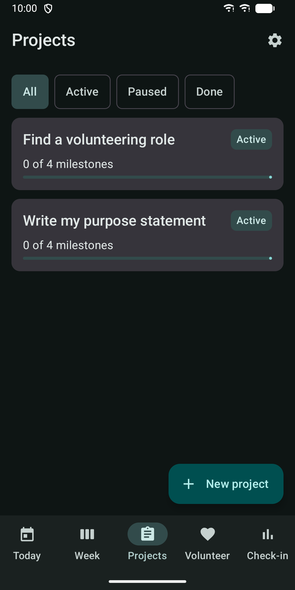
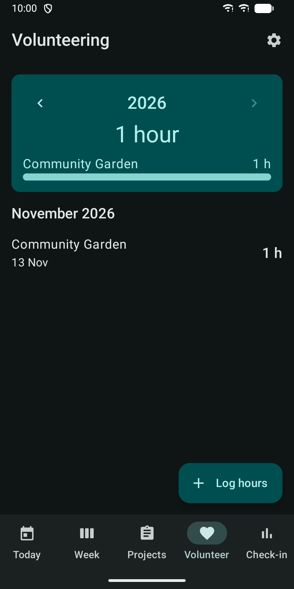
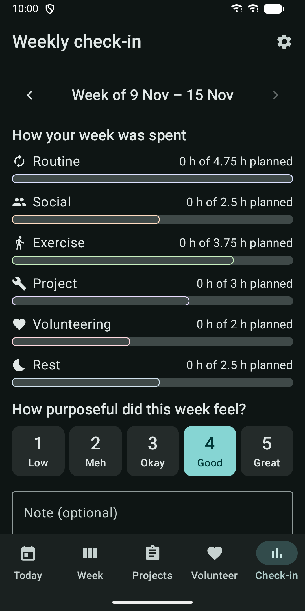

Purpose Planner: Ruhestand
Plane deine Woche im Ruhestand: Routinen, Projekte, Ehrenamt, Rückblick.





Über die App
Purpose Planner hilft dir, deinem Ruhestand einen Rhythmus zu geben, der zu dir passt. Ob du gerade in Rente gegangen bist oder dich darauf vorbereitest: Du erstellst einen einfachen Wochenplan und behältst im Blick, was dir wichtig ist. DAS KANNST DU TUN Heute: Sieh den Plan des Tages auf einen Blick und hake jeden Block ab. Wer sich auf den Ruhestand vorbereitet, sieht die Tage bis zum Rentenbeginn. Wer schon im Ruhestand ist, sieht, der wievielte Tag es ist. Woche: Erstelle eine Wochenvorlage mit wiederkehrenden Zeitblöcken. Jeder Block hat einen Titel, eine Kategorie (Routine, Soziales, Bewegung, Projekt, Ehrenamt oder Ruhe), Tage und Uhrzeiten. Du siehst die Woche als Raster oder Tag für Tag. Projekte: Verwalte Hobby-, Lern- und Haus-Projekte mit Meilensteinen und dem Status aktiv, pausiert oder erledigt. Ehrenamt: Trage Organisation, Datum, Stunden und eine optionale Notiz ein. Du siehst die Summe für das Jahr und je Organisation. Wöchentlicher Rückblick: Sieh, wie sich deine Woche auf die Kategorien verteilt hat, vergib optional 1 bis 5 Punkte dafür, wie sinnvoll sich die Woche angefühlt hat, und schreibe eine Notiz. Frühere Rückblicke bleiben in einer Liste. Startvorlage: Beginne mit "Die ersten 90 Tage im Ruhestand", einem sanften Wochenrhythmus mit Beispielblöcken und Projekten. Danach kannst du alles ändern. Erinnerungen: Optionale Benachrichtigungen, wenn ein Zeitblock beginnt, und am Sonntagabend für deinen Rückblick. Jede lässt sich ausschalten. Die Benachrichtigungen zeigen nie, was du geplant hast. Widget: Ein Widget für den Startbildschirm mit dem Plan für heute und deinem Countdown oder dem Tag deines Ruhestands. EINFACH ZU LESEN Große Schrift, hoher Kontrast, große Schaltflächen, helles und dunkles Design passend zu deinem Telefon und Unterstützung für Bildschirmleser. Läuft auf Smartphones und Tablets. DEINE DATEN BLEIBEN BEI DIR Kein Konto, kein Server, keine Werbung und keine Analyse. Die App hat keine Internetberechtigung. Alles wird auf deinem Gerät gespeichert. Du kannst eine Sicherungsdatei exportieren, auf Wunsch mit Passwort geschützt, und sie später über die Dateiauswahl des Systems wiederherstellen. PRO-FREISCHALTUNG Der Planer steht allen offen. Ein einmaliger Pro-Kauf über Google Play bietet zusätzlich: - PDF-Export von Plan, Rückblicken und Ehrenamt - Weitere Widgets: Woche, Projekte und Ehrenamtsstunden - Farbdesigns - Vier weitere Startvorlagen Pro ist kein Abo. Hast du es schon gekauft, nutze "Kauf wiederherstellen" in den Einstellungen. Die App ist auf Englisch. Mindestens Android 8.0. Fragen oder Feedback: apps@schimpf.es